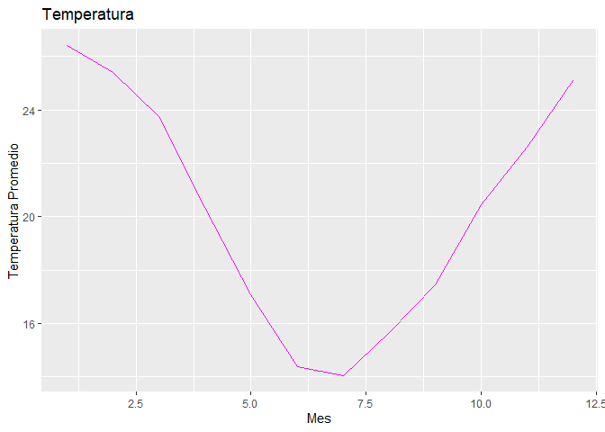

El objetivo de datosclima es aprender a desarrollar paquetes con RStudio
Instalacion
Podes instalar la version de desarrollo de datosclima desde GitHub con:
# install.packages("pak")
pak::pak("juanasacco/datosclima")Ejemplo
Aqui mostramos ejemplos basicos de como resolver problemas relacionados a nuestras funciones:
- Con la funcion
lectura_estaciones():
library(datosclima)
NH0437 <- lectura_estaciones("NH0437", "~/prueba_paquete")
#> Warning: One or more parsing issues, call `problems()` on your data frame for details,
#> e.g.:
#> dat <- vroom(...)
#> problems(dat)
#> Rows: 18929 Columns: 35
#> ── Column specification ────────────────────────────────────────────────────────
#> Delimiter: ","
#> chr (2): id, direccion_viento_1000cm
#> dbl (22): temperatura_abrigo_150cm, temperatura_abrigo_150cm_maxima, temper...
#> lgl (10): temperatura_suelo_10cm_media, temperatura_inte_5cm, temperatura_i...
#> date (1): fecha
#>
#> ℹ Use `spec()` to retrieve the full column specification for this data.
#> ℹ Specify the column types or set `show_col_types = FALSE` to quiet this message.
#> El archivo ya existía, se leyó el archivo.
NH0437
#> # A tibble: 18,929 × 35
#> id fecha temperatura_abrigo_150cm temperatura_abrigo_150cm_maxima
#> <chr> <date> <dbl> <dbl>
#> 1 NH0437 1970-08-01 23.3 31.2
#> 2 NH0437 1970-08-02 26.6 32.1
#> 3 NH0437 1970-08-03 17.4 22.9
#> 4 NH0437 1970-08-04 11.0 11.9
#> 5 NH0437 1970-08-05 11.1 12.6
#> 6 NH0437 1970-08-06 13.6 15.1
#> 7 NH0437 1970-08-07 10.8 14.9
#> 8 NH0437 1970-08-08 7.75 13.7
#> 9 NH0437 1970-08-09 8.2 15.1
#> 10 NH0437 1970-08-10 10.2 18.4
#> # ℹ 18,919 more rows
#> # ℹ 31 more variables: temperatura_abrigo_150cm_minima <dbl>,
#> # temperatura_intemperie_5cm_minima <dbl>,
#> # temperatura_intemperie_50cm_minima <dbl>,
#> # temperatura_suelo_5cm_media <dbl>, temperatura_suelo_10cm_media <lgl>,
#> # temperatura_inte_5cm <lgl>, temperatura_intemperie_150cm_minima <lgl>,
#> # humedad_suelo <lgl>, precipitacion_pluviometrica <dbl>, granizo <dbl>, …- Con la funcion
grafico_temperatura_mensual():
grafico_temperatura_mensual(NH0437,color = "magenta")
- Con la funcion
tabla_resumen_temperatura():
tabla_resumen_temperatura(NH0437)
#> Warning: Returning more (or less) than 1 row per `summarise()` group was deprecated in
#> dplyr 1.1.0.
#> ℹ Please use `reframe()` instead.
#> ℹ When switching from `summarise()` to `reframe()`, remember that `reframe()`
#> always returns an ungrouped data frame and adjust accordingly.
#> ℹ The deprecated feature was likely used in the datosclima package.
#> Please report the issue at <https://github.com/juanasacco/datosclima/issues>.
#> This warning is displayed once every 8 hours.
#> Call `lifecycle::last_lifecycle_warnings()` to see where this warning was
#> generated.
#> # A tibble: 7 × 2
#> # Groups: id [1]
#> id resumen_temp
#> <chr> <table[1d]>
#> 1 NH0437 2.10000
#> 2 NH0437 16.00000
#> 3 NH0437 21.00000
#> 4 NH0437 20.23105
#> 5 NH0437 24.70000
#> 6 NH0437 36.30000
#> 7 NH0437 191.00000